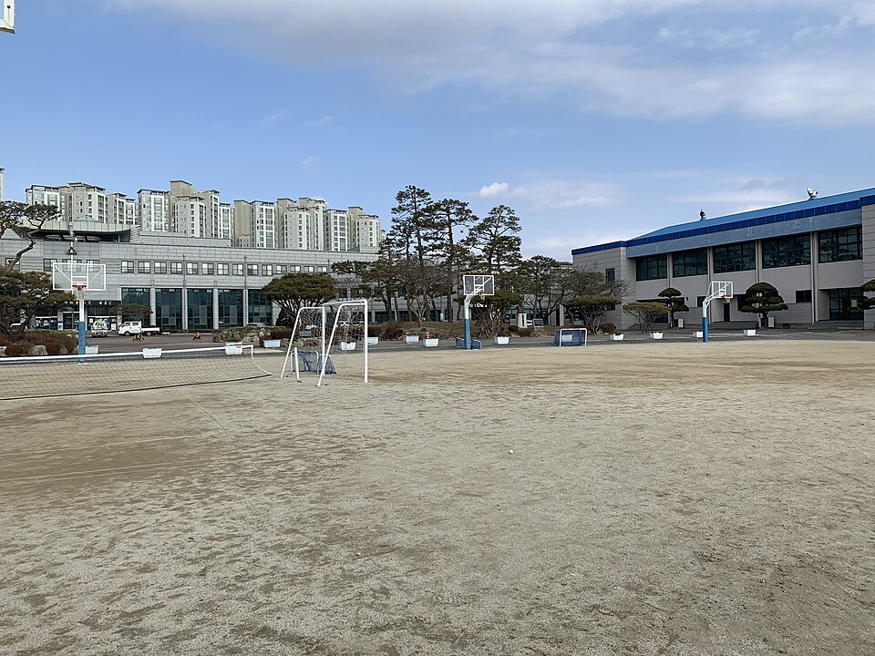

전북 전주 완산구는 관리 중인 학교가 77곳입니다. 고등학교가 17곳, 중학교가 21곳이고, 전주고등학교·상산고등학교·전주해성고등학교·전주한일고등학교·완산여자고등학교 같은 고등학교와 전주서신중학교·전주효문중학교·전주양지중학교 같은 중학교가 구 안에 모여 있습니다. 서신동·중화산동·효자동처럼 아파트가 많은 동네와 평화동·삼천동 쪽은 다니는 학교도 학원 동선도 달라서, 시간표가 맞지 않는 학생은 집으로 오는 1:1 영어과외나 수학과외를 따로 찾게 됩니다.
오늘은 전주 완산구로 직접 찾아가는 선생님 3명 중 두 분을 소개합니다. 한 분은 초등부터 고3까지 영어를 보는 선생님, 한 분은 초등부터 고1까지 수학 기초를 다지는 선생님입니다. 두 분 모두 방문과 화상 수업이 가능합니다.
서신동·중화산동 쪽에서 중등 영어과외나 고등 영어 내신을 방문으로 받고 싶을 때 맞는 선생님입니다. 영문학을 전공했고, 초등학생부터 고3까지 폭넓게 수업합니다. 설명을 선생님 기준이 아니라 학생 입장에서 이해되는 말로 풀어 주는 것을 원칙으로 둡니다.
수업 진도는 학생의 학습 속도에 맞춰 조절합니다. 첫 상담과 첫 테스트를 빠르게 진행해 지금 어디서 막혀 있는지부터 확인하고, 그 결과에 맞춰 수업을 설계합니다. 학생과 공감하며 수업하는 방식이라, 영어에 자신감이 떨어진 학생이 다시 시작하기에 부담이 적습니다.
허ㅇ 선생님 상세 프로필 →중화산동·효자동 쪽에서 중등 수학과외로 기초부터 다시 잡고 싶을 때 맞는 선생님입니다. 시간이 걸리더라도 단단한 공부 기반을 쌓는 것을 목표로 두고, 이해할 때까지 반복하는 꼼꼼한 수업을 합니다. 대학 시절 학습이 어려운 후배와 짝을 지어 공부 습관을 나누는 멘토 활동에 참여했습니다.
수업은 선생님이 설명만 하기보다 학생이 스스로 풀이를 말해 보도록 이끄는 참여형으로 진행합니다. 공부를 게임처럼 단계를 깨는 방식으로 풀어 흥미를 붙이고, 플래너로 혼자 공부하는 시간까지 챙기기 때문에 공부 습관이 아직 잡히지 않은 초등 고학년·중학생에게 잘 맞습니다. 학생·학부모와의 상담도 솔직하게 나누는 편입니다.
이ㅇ익 선생님 상세 프로필 →학교마다 진도와 시험 범위가 달라서, 학교별로 준비법을 따로 정리해 두었습니다.
👉 전주 완산구 영어과외 선생님 · 전주 완산구 수학과외 선생님 · 관리 학교 77곳 전체 보기